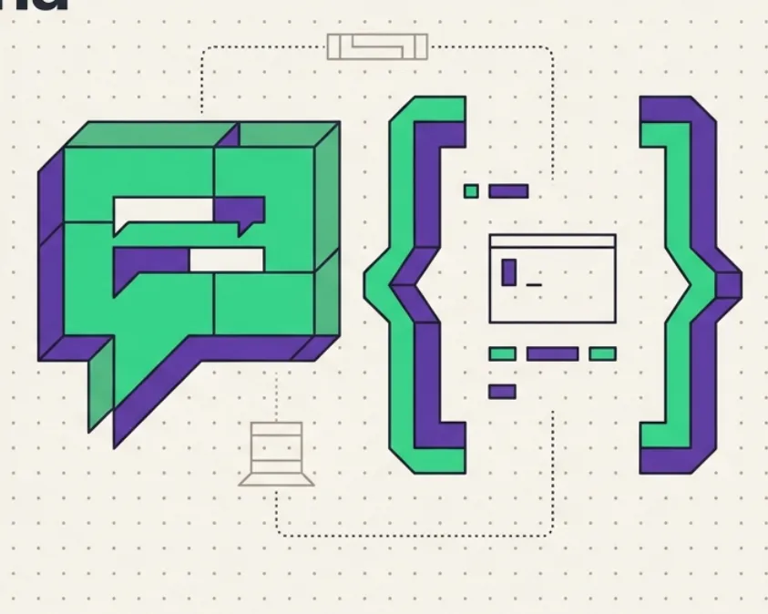

ENTENDER UM CONCEITO
“Quero entender
contas e owner.”
Explore o fundamento antes de avançar para a implementação.
EM PORTUGUÊS · NO SEU RITMO
Sua dúvida é o ponto de partida. Luma acompanha você com explicações, exemplos curtos e perguntas para construir seu próprio caminho.
Tutoria individual para oficinas, ideathons e suas primeiras construções.

01 / SEU PONTO DE PARTIDA
Um conceito, uma ideia de projeto ou um bloqueio no código. Você traz o objetivo; Luma orienta o próximo passo.
ENTENDER UM CONCEITO
Explore o fundamento antes de avançar para a implementação.
EXPLORAR UMA CONSTRUÇÃO
Contextualize cada etapa no que você quer aprender a construir.
INVESTIGAR UM BLOQUEIO
Compartilhe um trecho e volte com o resultado da sua tentativa.
A proposta é apoiar seu raciocínio e sua autonomia com um conceito por vez, exemplos contextualizados e feedback sobre suas tentativas.
02 / CONHEÇA A EXPERIÊNCIA
Declare seu objetivo, converse com Luma e teste o que aprendeu no seu próprio ambiente de desenvolvimento.
Traga seu objetivo, sua dúvida ou um trecho de código.
Teste o conceito no seu editor ou terminal.
Compartilhe o resultado e refine a próxima tentativa.
03 / PREPARE SEU PRIMEIRO PASSO
Luma funciona no seu computador. Esta página apresenta o projeto; a conversa acontece depois de instalar e executar o kit.
Abrir tutorial completoUse Git, Node.js 24 e npm. Em uma oficina, peça apoio a quem facilita.
Informe endpoint, modelo e chave de API, quando necessária. O kit não inclui modelo nem créditos.
Leia o consentimento, informe seu nome e escreva o que quer aprender. Depois, comece a sessão.
git clone https://github.com/smp-sandramariapereira/luma-tutor-solana-dev.git
cd luma-tutor-solana-dev
npm ci
npm run devDepois, abra http://127.0.0.1:4177.
APRENDA COM CUIDADO
04 / CONSTRUÇÃO EM COMUNIDADE
Luma nasceu como uma entrega de aprendizagem no contexto da Solana Foundation Brazil, com foco em oficinas e ideathons.
EXPERIÊNCIA DE USO
Luma foi utilizado como apoio no desenvolvimento de Geoyeld, aplicação finalista do hackathon Solana e Cursor em Passo Fundo.
Uma experiência de uso em um contexto real de desenvolvimento.
Contribua com documentação, revisão técnica, acessibilidade, exemplos didáticos ou relatos de uso em oficinas.
Conheça como contribuirAs propostas são revisadas pela manutenção para preservar o propósito pedagógico.
O PRÓXIMO PASSO COMEÇA COM UMA PERGUNTA